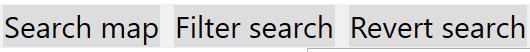

Searching maps
order to search resources presented on maps you need to press button Search map, or access search window using shortcut CTRL+S
That action will open window that looks like this:
You can choose type that already exists in order to find such resources.
Same way, you can choose between resources.
You can eighter choose resource, type, or both. There is no option where you don't choose anything.
By pressing search btn search engine gives you filtered set of maps that contains resources that fulfill search parameter constraints.

On top toolbar filter and revert search button can be seen

Reverting search will happend when you press button Revert search. That action will return application to state before search
Filtering resources is demonstraded here
.